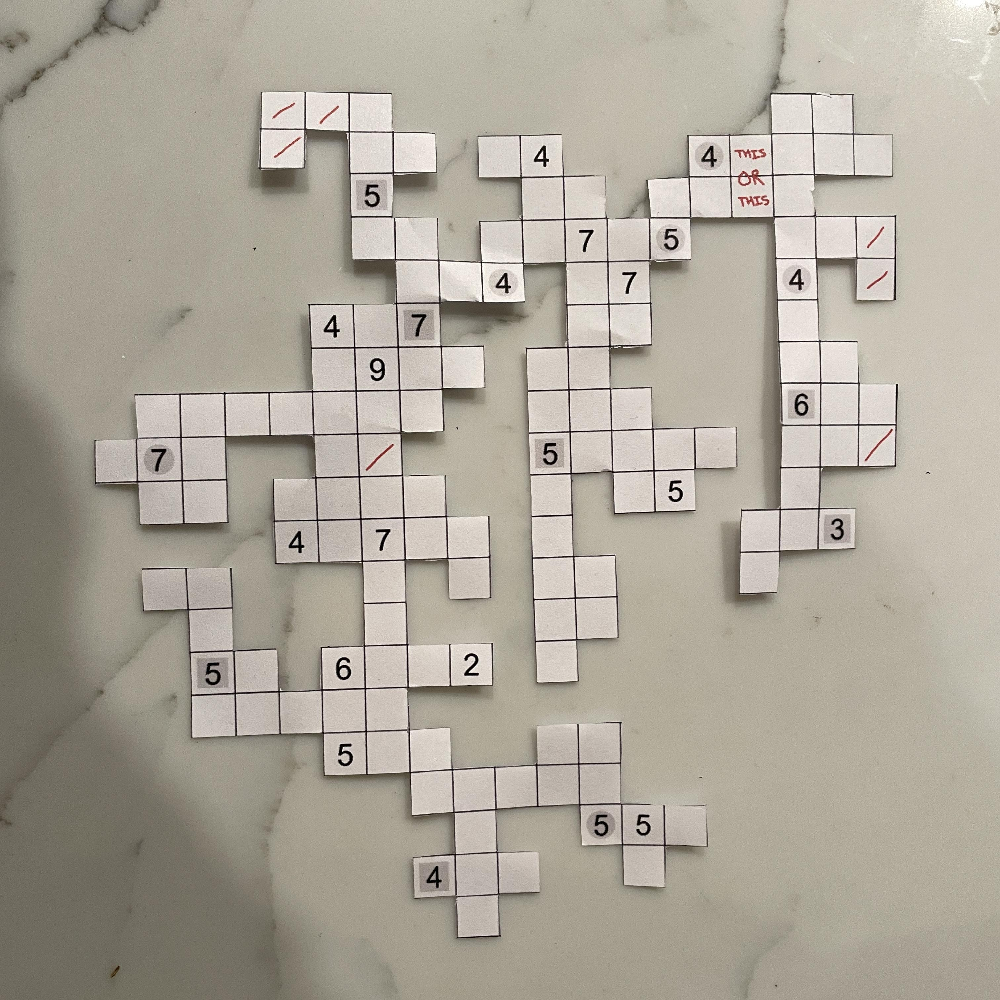
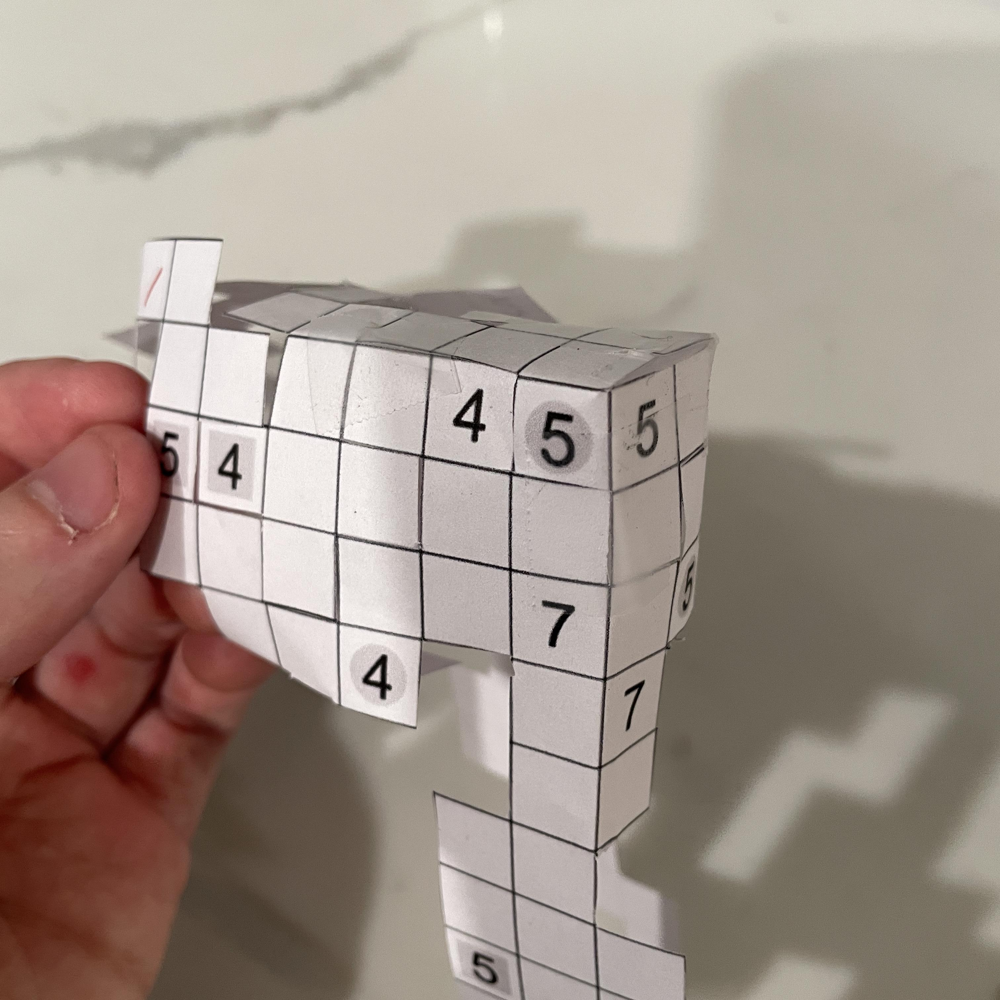
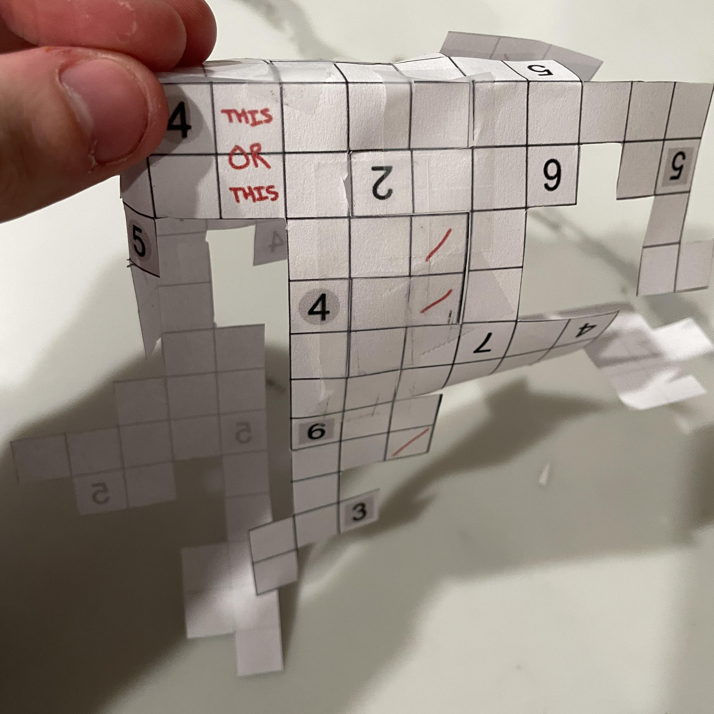
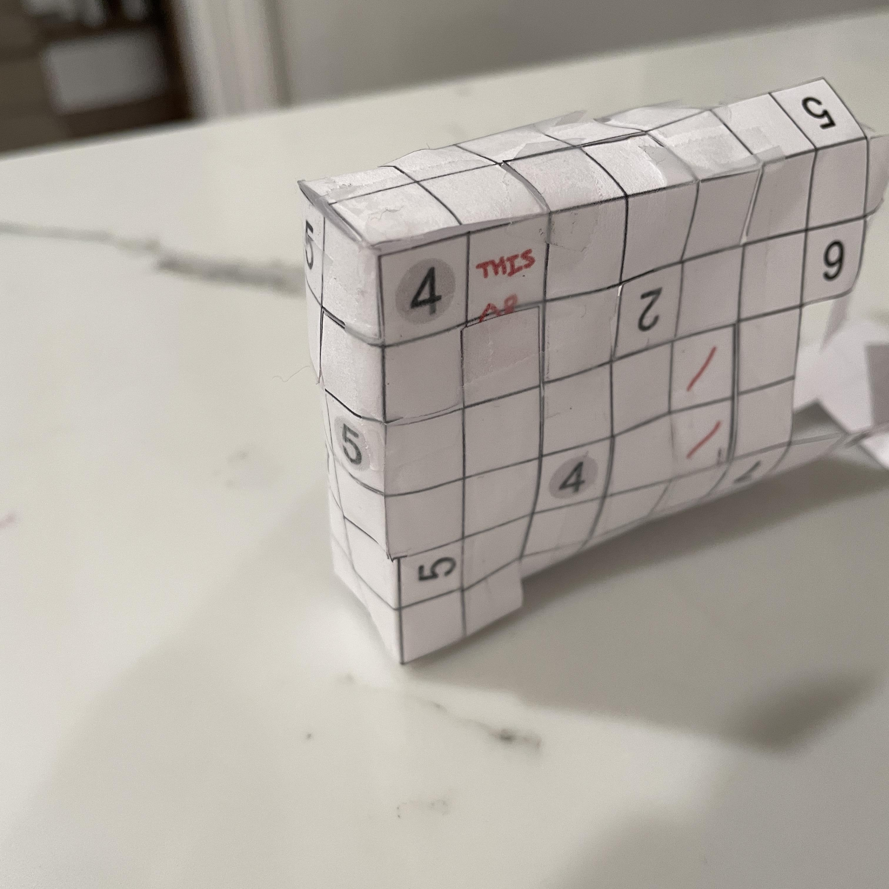
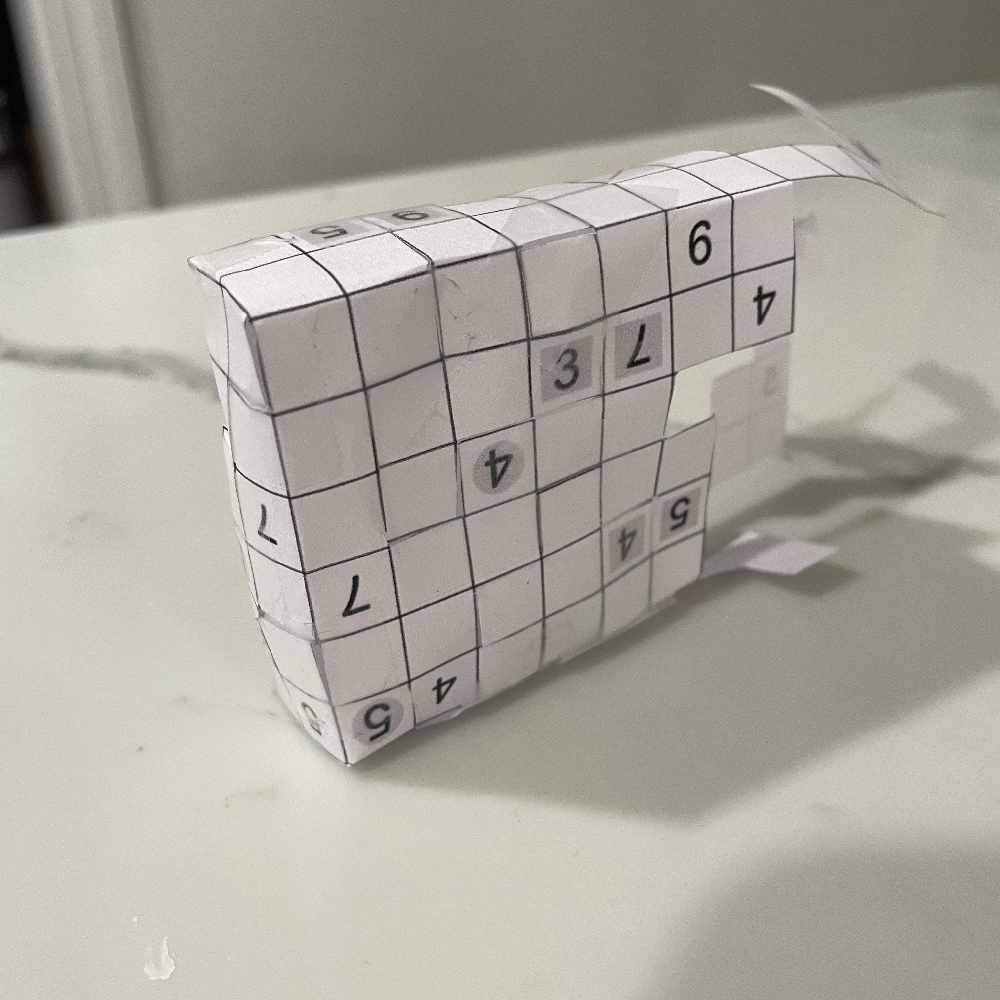
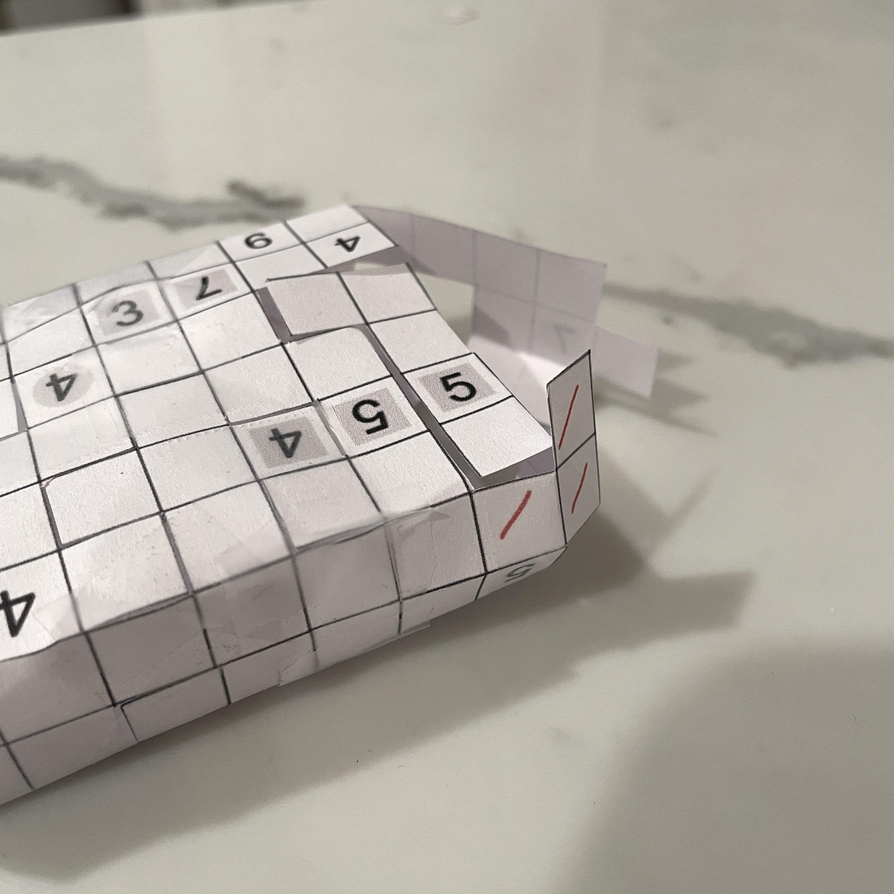
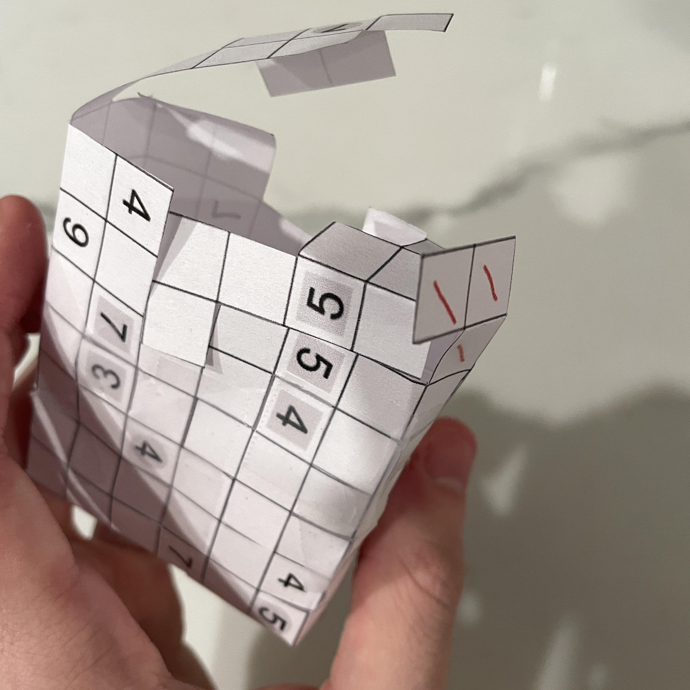
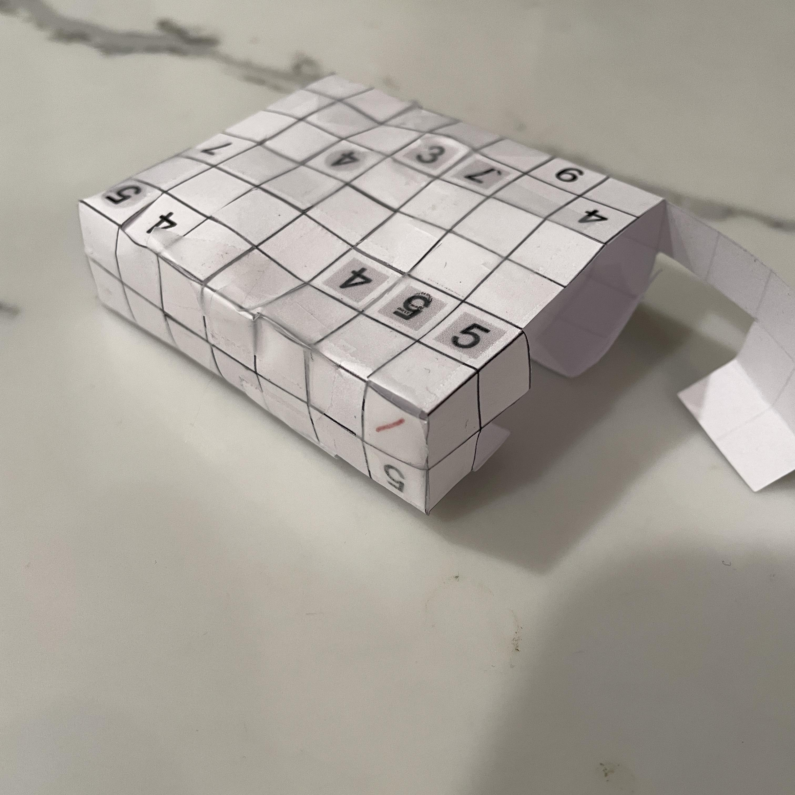
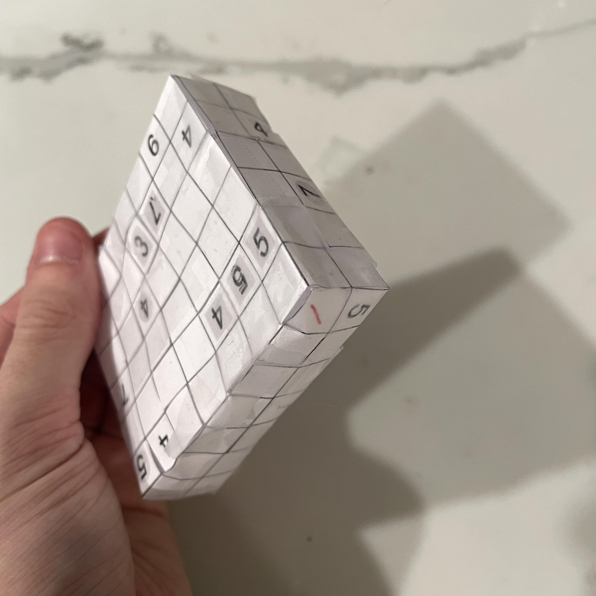
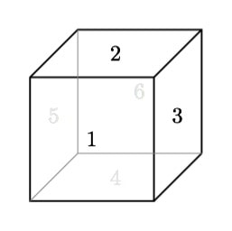

Unlike October's puzzle, I wanted to solve the November 2025 Jane Street puzzle in less than 1 day. This problem was a grid problem called Shut the Box. The problem statement is as follows:
Use scissors to cut away one or more groups of orthogonally connected cells (squares) from the grid above. Any group you cut away must have at least one cell along the boundary of the grid. The remaining cells must be orthogonally connected and not have any holes.
It must be possible to fold along some of the grid lines so that the remaining cells form the six walls of a rectangular solid (the "box"). There may not be any overlapping cells in the box.
Some cells have been labeled with arrows. These cells are not part of the box, but instead point in the direction(s) of the nearest box cells (looking in that square's row and column).
Some cells have been labeled with numbers. These cells are part of the box. A number indicates how many cells within one king's move of that cell are a part of the box. (Including the numbered cell.)
When the box is assembled, each grey circle should be directly opposite another grey circle. That is, the line segment connecting "opposite" circles should be orthogonal to the faces containing them. Each gray square should be orthogonally adjacent to (and on the same face as) another gray square.
Once you have assembled the box, compute, on each face, the sum of the numbered cells. The answer to this puzzle is the product of these six sums.
An example grid can be seen here. Pictures of the solved region and assembled box for the example grid can be seen here.
So essentially we are solving for the net that we will fold into a rectangular prism!
I first wanted to determine what the cells of the net would even be before we start thinking about performing folds and cutting things out. Using the rules provided and pure logic, I was able to narrow down the cells that could be part of the net to the following:

Here, I put red slashes in cells that may or may not be part of the net. The red "THIS OR THIS" text indicates that only ONE of the two cells with that writing must be part of the net (the nearby cell with the 4 constrains us).
Since I could not narrow down the candidate cells any further, I now needed to print and cut out the net with the candidates that I had. However, I had accidentally printed an older version of my net with 2 candidates in it. If the top left is cell (0, 0), then my printed copy had incorrect candidates in cells (8, 7) and (8, 19). These two cells will unfortunately be marked in red in the images to come.
Above is the cut-out net (albeit with the two incorrect candidates in it). It took me roughly 30 minutes to cut it out and my neck hurt so much as a result of looking down for so long.
The first thing I noticed with the net was that the bottommost plus-shaped and T-shaped parts of the net fit perfectly into the negative space of the top of the net! I flipped the net upside-down and folded the bottom of the net over the top of the net, putting the pieces together as shown below. Ignore the blister on my finger, I had just gone bouldering the day before.
The orthogonal grey square rule is satisfied, as we have a grey square 5 next to a grey square 4. Additionally, the opposite grey circle rule is satisfied, as there was a grey circle 4 on the opposite face of the grey circle 5.
The next observation I made was huge: the rightmost "peninsula" of the printed net fit perfectly into the negative space of the middle of the net when rotated 180 degrees.
After getting the peninsula to fit, I realized the final box would have a width of 2, as it was the only way the peninsula could fit. It also seemed like we would need the candidate cells in a group of two after all for this to work. I also verified one grey circle rule with the grey circle 4, and it was satisfied.
This move involved extending below the height of the "THIS OR THIS" cells. Since we could only have one of those cells, one of them had to go. We MUST have the top cell in this group, as it was now completely surrounded and no other cell could be folded onto it without covering other cells. This means that the bottom cell must be removed. Luckily, the long strip hanging down when folded upwards just so happened to cover the candidate bottom cell perfectly.
This move also gave us our box height of 6. At this point I believe it was relatively easy to count the sums of the numbered cells on each face of the box. Three faces were not taped together, but each flap that was hanging was pretty close to its respective face. However, I wanted to construct the box and verify the answers before submitting. I moved on to patching near the bottom of the box.

I am now holding the box upside down. The flap at the top of the image fit right into the front face of the box in the image. I cut out the incorrect candidate cell that would cover the cell guaranteed to be part of the net. You can also spot the other incorrect candidate cell in the image (this one is a part of the box in fact). Here is the result:
The grey square rule is satisfied once again, with the grey squares 3 and 7 being orthogonally adjacent to each other. I went to piece together the last two faces of the box.
An L-shaped flap fit right into a large face of the box and the grey square rule checks out again. Only one face remained.
Observe how two of the candidate cells fold onto two guaranteed cells on a corner of the box. This means they have to go.
All that was left to do was fold the final piece onto the box.
The grey circle 7 is opposite a grey circle 5 on the opposite face of the box, so the rule is satisfied and we have shut the box! I'll present the final box, but first we must establish a reference frame. I will use the following labeling for the faces of the box.
The head-on views of the final faces of the box are shown below.
Summing up the numbers on each face of the box and multiplying them together gives us the following:
Multiplying the totals gives us a product of 16414860.
This puzzle was a lot of fun to solve and way more approachable than last month's. Anyone could really do this puzzle. Even starting late into the afternoon, I was able to submit my answer before midnight. I'm still really surprised that a net like that managed to fold into a box. I wonder if there's an algorithm where given a net, determine if it can be folded into a box. Or better yet, given a net, can we determine the box that it can be folded into? If so, this type of geometric assembly puzzle would probably have an astronomical complexity. The two problems are probably in NP and FNP respectively.